以前
入社4年目。仕事は回っていて、評価も悪くない。でも週末になると「このままでいいのか」と考えて、答えが出ないまま月曜を迎える。周りに話すと「贅沢な悩みだね」で終わるので、最近は誰にも話していない。
いま
「次の予定を考えない時間を、私は自分の暮らしの中で、人と一緒にどうつくれるのか」という自分の問いを持ち、平日の夜にその時間を自分でつくっている。同じように迷う人と過ごす小さな会も企画した。何を大事に生きるかを、自分の言葉で言える。
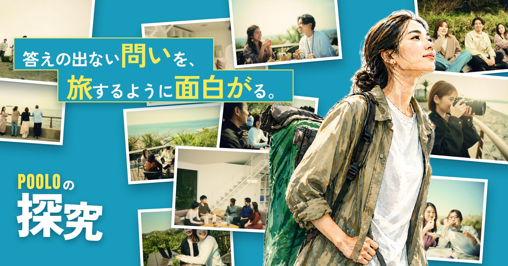
すぐには答えの出ない問いとともに、人生を旅するように面白がる
こんにちは！みっちーです。POOLOの考え方を、本のように頭から読めるようにまとめました。POOLOが目指すこと、始めた理由、旅をどう捉えているか、8ヶ月で何をして、何が起きるのかを、できる限りていねいに書いています。
今の時点で、80点くらいのできかなと思っています。読んでくれたみんなと一緒に、作っていきたいと思っています。感想や「ここが分からない（どういうこと？）」みたいな連絡、ウェルカムです！
それでは、始めます！
最後に、時間を忘れて誰かと話したのはいつですか？
社会人になって、本気で語り合える仲間はいますか？
最後に「これは自分で決めた」と胸を張れる決断をしたのはいつですか？
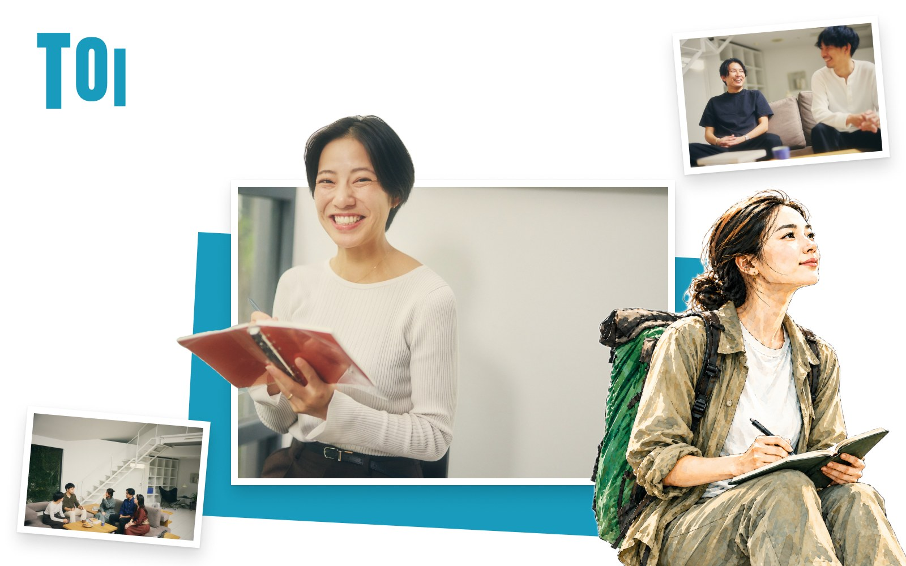
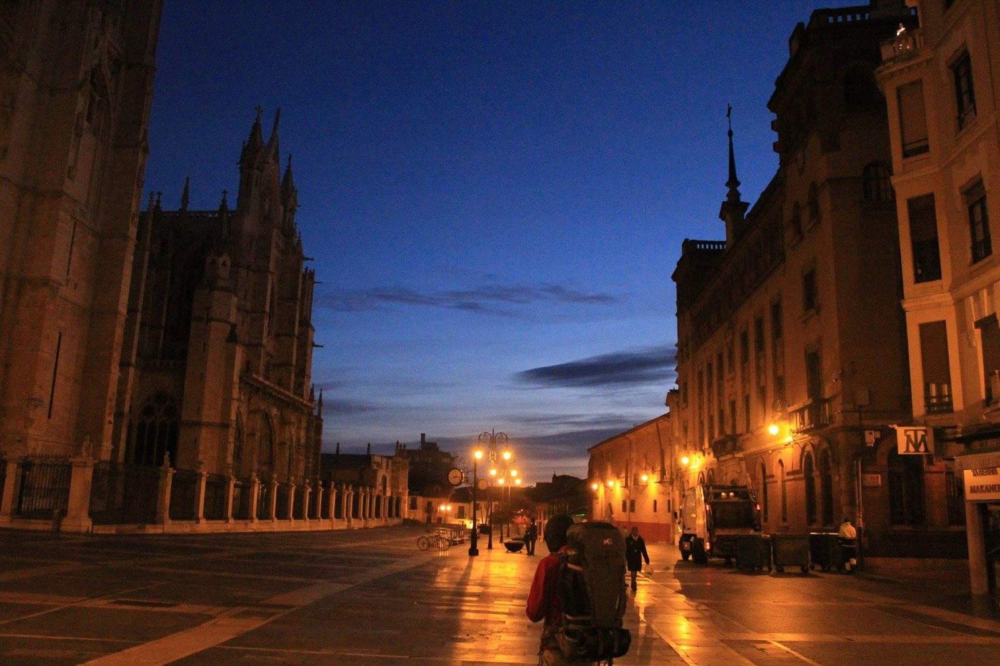
2013年12月。スペインの巡礼路800キロを歩いていた。途中、セルビア出身の男性に「なぜ歩いているの？」と聞かれて、答えに詰まった。
周りの人はみんな、何かを背負って歩いているように見えた。
当時の日記から自分だけなにも背負っていないお気楽な人間であることが恥ずかしかった。かっこいい意味を探した。
自分の言葉が出てこないのは、大学のころから。
もともとは、心がすぐに動く子どもだった。漫画を読めば泣き、テニスの試合で逆転すれば胸が高鳴る。大学では、社会人に話を聞いて記事にするNPO法人の活動に入り、そのときの自己紹介にも「スラムダンクを読んですぐ泣きます！」と書いている。
ただ、活動の仲間に送ったメールには「感想も自分が本当にそう思っているのかも分かりません」とある。大学に入って、試合や受験のような与えられたお題がなくなると、自分が何を感じているのかが分からなくなった。社会人の話を聞いたあとに感想を聞かれても、自分の言葉が出てこない。5ヶ月が過ぎたころには「自分は無の状態であることに気付きました」とまで送っている。つらい、大学時代だった。
社会人3年目。同じシェアハウスに、お笑い事務所に通う人や、世界一周中の人がいた。新潟から上京して、浪人して、大学を出て、会社に入った。そんな自分の道が、急に「誰かが通ってきた道」に見えて、ものすごくがっかりした。とあるインタビューで「自分の人生はくそ真面目で、退屈に思えてしまいました」と答えたのもこの年。その年に会社を辞めて、世界一周に出た。
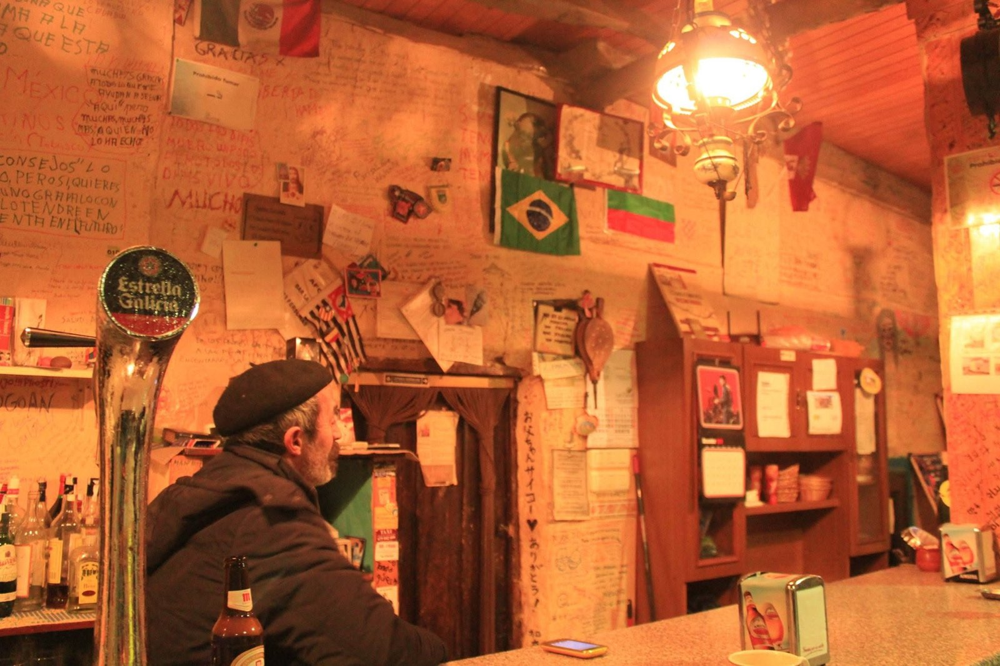
「なぜ歩いているの？」に答えられないまま、歩く日は続く。初日は雪山で足が痙攣して動けなくなり、イギリス人の夫婦に助けられた。クリスマスに道に迷った日は、見知らぬ人の車で次の街まで送ってもらう。1ヶ月以上一緒に歩いた韓国人の友人と別れた日は、雨の中を泣きながら歩いた。かっこいい意味は最後まで見つからないまま、日記は1万字を超えていた。
日記が1万字を超えるほど、心は動いていた。それまでは「自分がどう感じたか」を、自分に問うことがなかったのだと思う。これが、今振り返ると、一番奥にある葛藤だったように思う。
POOLO学長／CODOLI代表
みっちー
感想が出てこない、と書く
自分の経歴にがっかりする。12月、スペインの巡礼路へ
TABIPPOの創業に加わる
旅大学を始める
POOLOを始める
CODOLIを立ち上げる
詳しいことは、こちらのnoteに書いた。
夢中だったものから、少しずつ遠ざかっていった僕が、あたらしい旅の学校POOLOをやる理由
社会が人生の型を用意してくれた時代から、一人ひとりが自分で組み立てる時代に変わってきた。その変わり目にいる今、迷う人が増えている。理由は4つあると考えている。
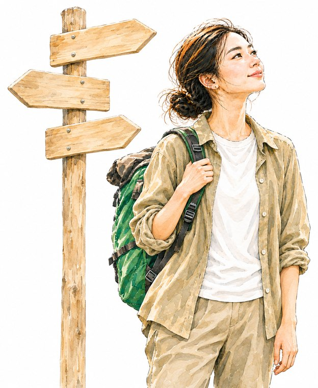
働き方、住む場所、家族の形。どれも前の世代より選べる幅が広がった。一方で、低成長の時代に入り、決まった型をたどれば報われるとは言えなくなっている。
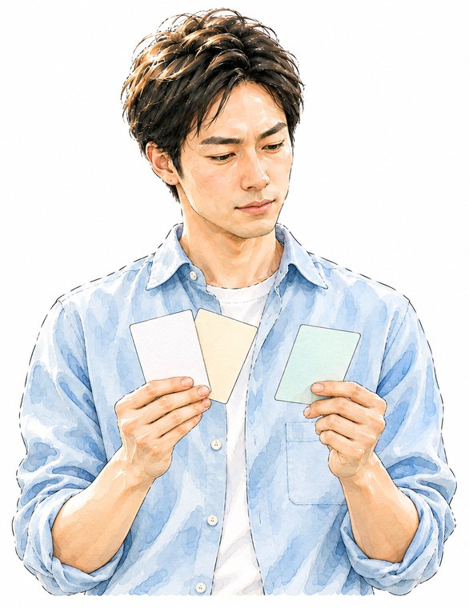
決める責任は一人ひとりに移った。ところが、受験や就職で使ってきた基準は外から用意されたもので、自分がどう感じたかを聞かれないまま大人になる人が多いと見ている。大学生のころの僕も同じ。
「後悔しないキャリアの選び方」や、AIに聞けば返ってくる「向いている仕事」。答えっぽいものはいつでも届く。けれど、自分が何に迷っているのかは、誰も教えてくれない。
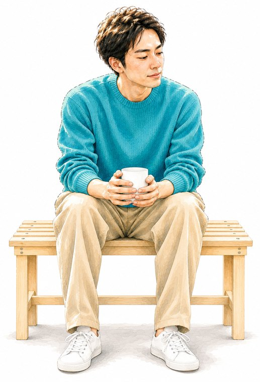
地域・親戚・職場のつながりが薄れ、仕事の損得が関係ない人と本音で話せる相手は、自分から会いにいかないとできなくなった。SNSで人と比べるほど、迷いは口に出しにくくなる。
4つの理由のうち、理由2と理由4にかかわる調査を2つ載せる。そのほかのデータは資料編にある。
理由2 日本は5か国で最も低い
こども家庭庁「我が国と諸外国のこどもと若者の意識に関する調査」令和5年度
理由4 約4割。20〜30代で高い
内閣府「孤独・孤立の実態把握に関する全国調査」令和6年。「それ以外」は、ほとんどない・決してない・無回答の合計
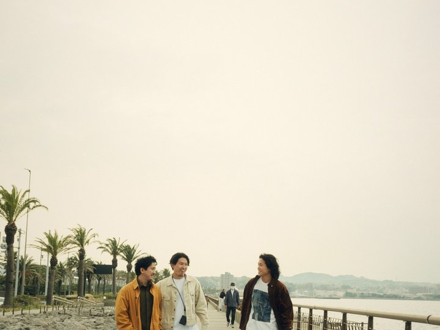
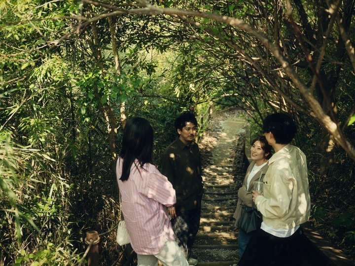
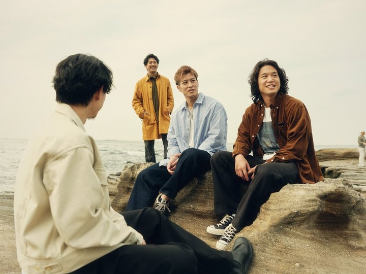
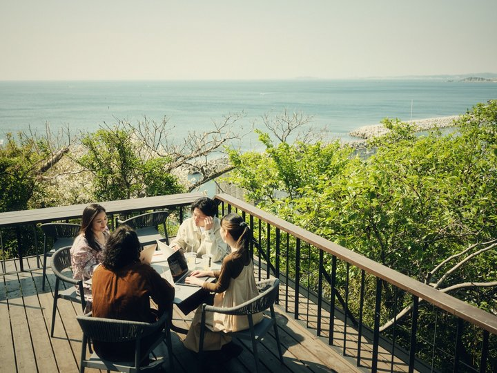
帰国後、僕は「旅で世界を、もっと素敵に。」を掲げるTABIPPOの創業に加わる。TABIPPOは、年間200回以上のイベントや、日本最大級の旅イベントBackpackFESTA（年間約4,500人）を通して、旅を広めてきた。
イベントに来てくれる人と話していると、旅の話から、仕事やこれからの生き方の話になることが多い。そのなかで一番多く聞くのが、「ひとりで考えていると分からなくなる」という声。仕事も生活も回っているのに、このままでいいのかと立ち止まっている人が、たくさんいる。
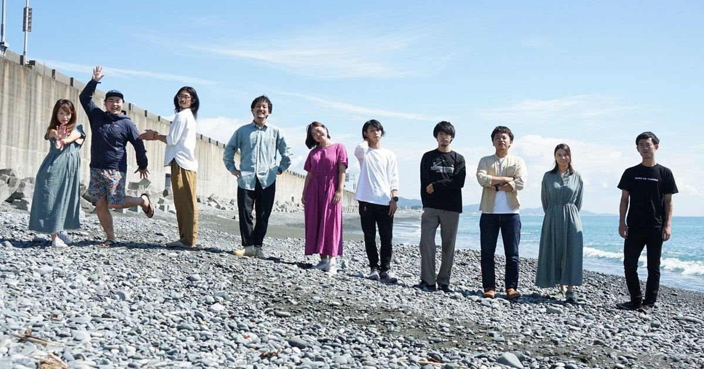
TABIPPOでは、イベントや旅の企画を通して、旅に出る人や帰ってきた人とたくさん話してきた。そこで、旅をしているとき、人は楽しそうに生きていると何度も感じてきた。
日常では迷っていた人が、旅先では自分で決め、知らない人と深く語り、「おっ」と心が動いたことを誰かに話したくなる。帰ってくると、旅のエピソードを面白そうに話してくれる。巡礼路を歩いていた僕もそのひとり。
旅先では、理由をうまく説明できないまま「これをやってみたい」「この人にもっと話を聞きたい」と思う瞬間がある。ここでは、この気持ちを衝動と書く。
2章に書いた4つの理由を、日常、旅先、僕が歩いた巡礼路の3つで並べた。
選択肢は、情報として知っているだけ
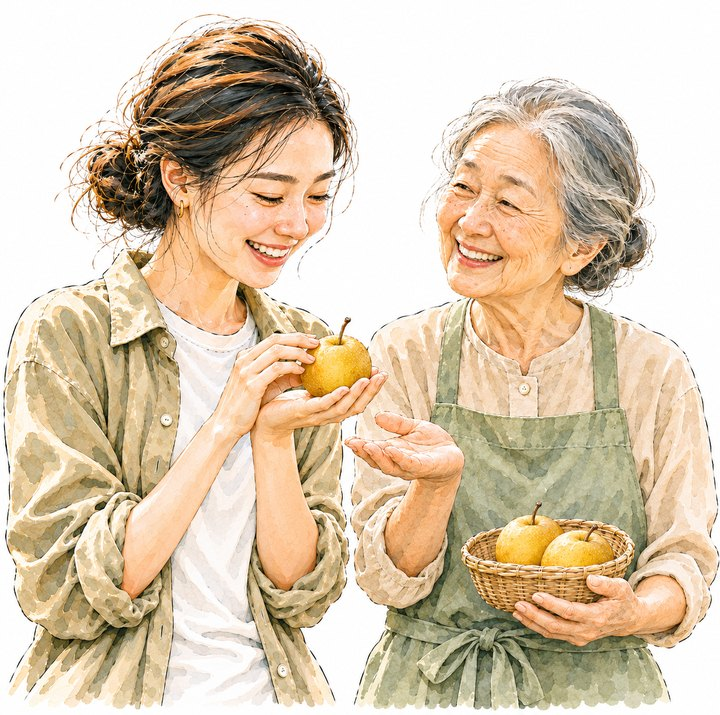
知らない生き方や暮らしに、身体ごと入る
800kmを自分の足で歩いた
外の基準で決めている
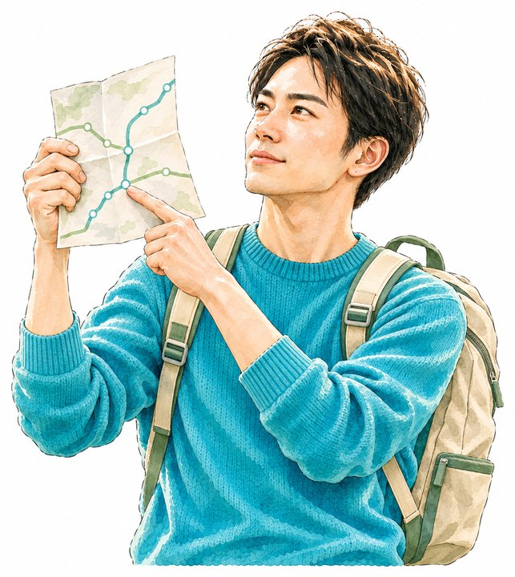
慣れない場所では、周りの評価や「こうすべき」が通じない。どこで足を止め、誰の話を聞くかは、その場の自分が決める
道に迷い、どうするかをその場で決めた
答えっぽいものに振り回されている
心が動いた経験から「やってみたい」が出てきて、それが自分の問いの元になる
「なぜ歩いているの？」に詰まり、日記が1万字になった
ひとりで抱えている
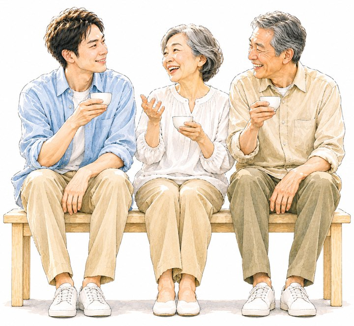
旅先で出会った人に心が動いたことを話し、相手の経験も聞ける
助けてくれた夫婦、車で送ってくれた人、一緒に歩いた友人
POOLOでいう旅は、いつもの暮らしの外に出かけ、いつもの当たり前が通じない場所で、誰かの暮らしに触れて心が動く経験をすること。遠くへ行くかどうか、泊まりがけかどうかは関係ない。友人に誘われた旅でもいい。途中で「この人の話をもう少し聞きたい」と足を止めたなら、そこで自分で決めている。
POOLOでは、次の3つがそろっていれば旅と考える。
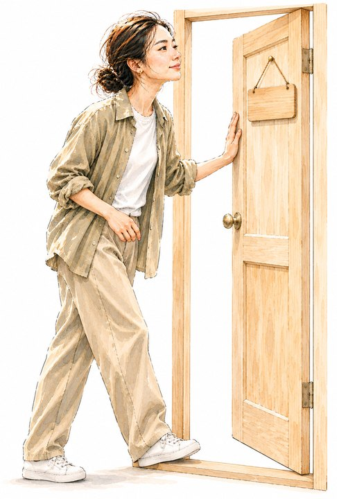
1自分で決める場面がある行き先を自分で決める。誘われた旅なら、どこで足を止めるか、誰の話をもう少し聞くかを、その場で決める
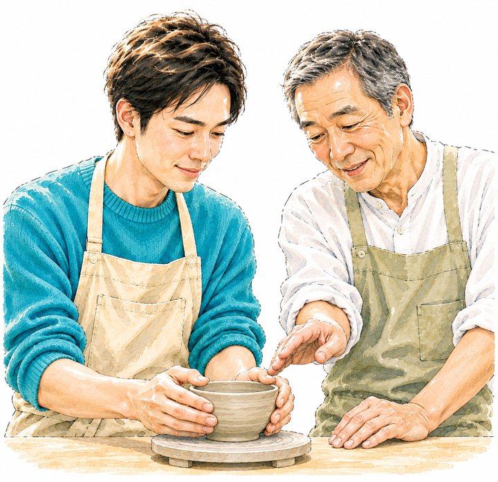
2いつもの当たり前が通じない場面がある自分が少数派になる場所や、知らない人と話す時間がある
うれしかったこと、引っかかったことを、1行でも書いておく。その日に書けなければ、帰ってから思い出して書く
近所の行ったことのない店に入ることも、誰かの仕事を半日手伝うことも、3つがそろっていれば旅に入る。誘われて行った旅や、予定の決まった旅でも、途中で足を止めた場面があれば旅に入る。
旅を重ねるうちに、3つのスタンスが身についていく。毎日の暮らしでは、誰かが決めた予定や基準に合わせて動くことが多く、気づくと受け身になっている。旅先では、行き先も、誰に話しかけるかも、予定が崩れたときにどうするかも、自分で決めて動くことになる。そうして身につく3つを、POOLOではと呼び、8ヶ月を通して大事にしている。
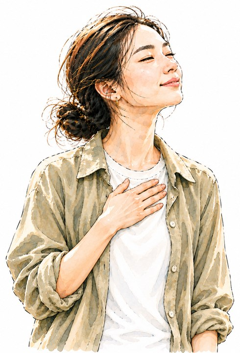
旅では遠い土地や人、出来事も、身体で触れると、他人事から自分の話になる。心が動いたことを、自分のこととして残す。
POOLOの8ヶ月では自分の言葉で問いにする。相手の経験を聞いて、自分ならどうかを考える。
できていないときはうまくいかないことを、仲間や環境のせいにしたくなる。他責になりそうなときほど、自分にできたことは何かを先に考える。
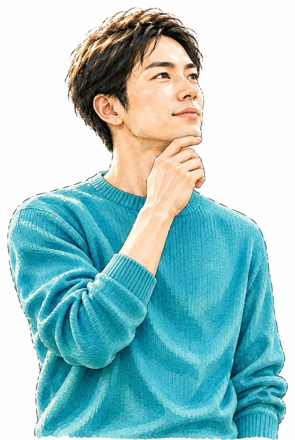
旅では日常では人や状況に任せている行き先やルート、会う人を、自分で決める。出かけたあとも、どこで足を止めるか、誰の話をもう少し聞くかを決めている。
POOLOの8ヶ月では何を問うか、誰に話すか、いつ出すかを自分で決める。
できていないときは誰かが決めてくれるのを待っている。待って決まったことは、結果を自分で引き受けにくい。迷ったままでも、覚悟をもって自分で選んで始める。
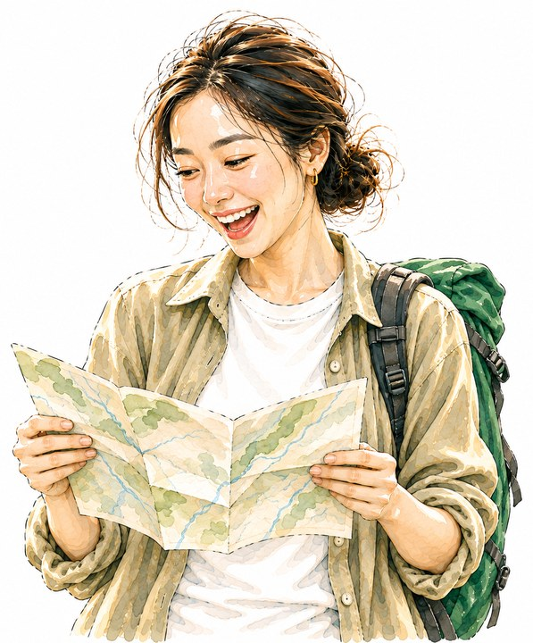
旅では計画どおりにいかない、言葉が通じない、知らない価値観に出会う。そうした予定外のことを受け入れて、問いのきっかけにする。
POOLOの8ヶ月ではうまく言えないものをそのまま残す。予想と違う返事を、問いの書き換えに使う。
できていないときは一歩引いて、斜に構えて眺めている。傷つかずにすむけれど、何も起きない。よく分からないことほど、まず乗ってみる。
ステップごとの使い方は、付録Aの旅的スタンスにまとめた。
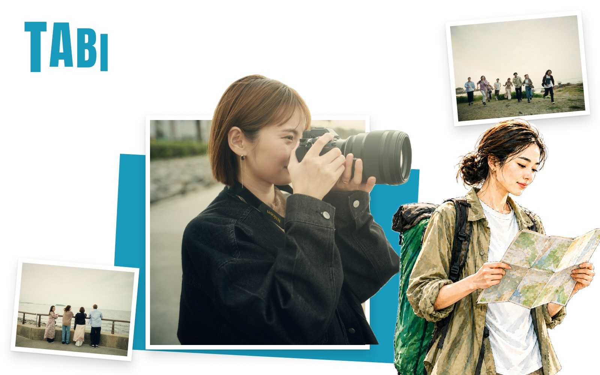
旅先で誰かの暮らしに触れると、出発前の自分にはなかった「知りたい」「やってみたい」が生まれる。その気持ちには続きがあって、続きの多くは、帰ってきた毎日のなかで起きる。
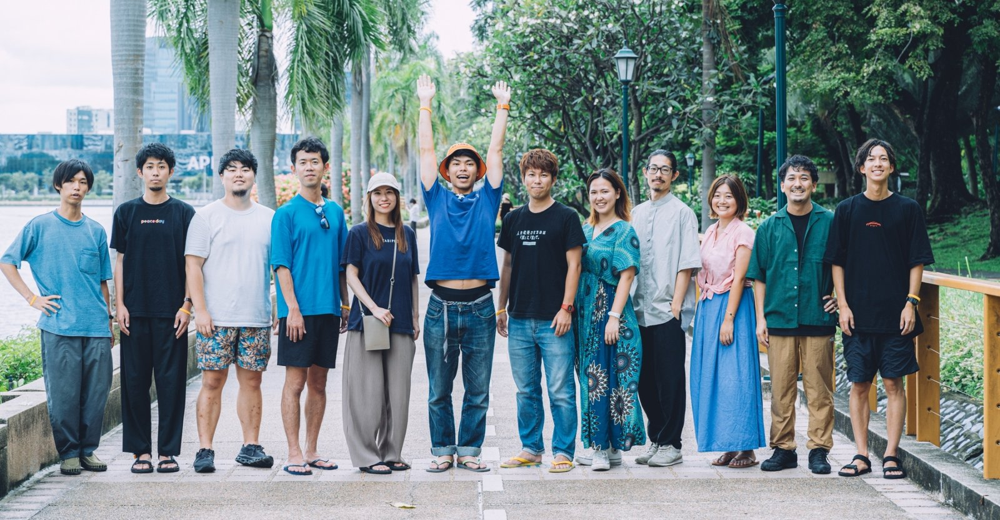
たとえば、こんな続き方がある（説明のための例）。
島の小さな商店で、店番のおじいさんが、客が来るたびに手を止めて「今日はどこへ行ってきた？」と聞いていた。買い物は3分で済むのに、気づくと20分そこにいた。この島では、買い物より立ち話のほうが長い。そして自分は、急いでいないときには、人の話をこんなに聞きたくなる。相手の暮らしと自分のことを、同じ場面で初めて知った。
帰ってきた月曜、隣の席の同僚が「週末、実家に帰っててさ」と言った。いつもなら「そうなんだ」で終わるところで、商店のおじいさんを思い出して「どうだった？」と聞き返した。同僚は実家の畑の話を10分した。3年隣にいて、初めて聞く話。
数週間後、POOLOの仲間にこの話をすると、「それなら私の地元にも来てほしい。うちの商店街にも、そういう人がいるから」と誘われた。翌月、その商店街へ行くことにした。
同僚に聞き返したのも、仲間に誘われたのも、いつもの相手がいる毎日に帰ってきてからのこと。
ただ、こうした続きは途切れやすい。哲学者のジョン・デューイは『Human Nature and Conduct（人間性と行為）』（1922年）で、習慣を呼吸にたとえた。呼吸が肺と空気の両方で成り立つように、習慣も本人だけでは成り立たず、まわりの人、過ごす場所、毎日の流れと一緒に成り立っている、とデューイは考えた。
帰ってきた毎日には、職場の人間関係、いつもの通勤、週末の過ごし方が待っている。同じ顔ぶれと同じ予定のなかでは、前と同じ受け答えをするほうが楽になる。「どうだった？」と聞き返すことも、旅の話を誰かにすることも、きっかけがなければ少しずつ減っていく。
デューイは、習慣を直接変えようとするのは魔法を信じるのと同じだと書き、まわりの人、過ごす場所、毎日の流れのほうを変えることをすすめた。
デューイ『Human Nature and Conduct』（1922年）の習慣の考え方をもとにした図。
続きが生まれるまでには時間がかかる。旅先で聞いた言葉を職場で思い出すのは、帰ってすぐとは限らない。仲間に話したのは数週間後で、誘われた商店街へ行くのはその翌月。行けば、また知りたいことが増える。
POOLOの8ヶ月では、帰ってきた毎日に、仲間、運営チーム、旅と講義の予定が加わる。旅の話を聞いてくれる相手がいて、次に出かける予定もあるので、「知りたい」「やってみたい」の続きを誰かと一緒に試せる。
TABIPPOのイベントでも、同じことを見てきた。1回のイベントで心が動くことはあっても、人が変わっていくのは、長い時間をかけて、仲間とともに過ごすなかでのことが多い。
僕自身、巡礼路を歩いた理由は説明できないまま帰国した。「なぜ歩いているの？」の続きを考えてきた時間は、帰ってきてからのほうがずっと長い。
POOLOは、この続きを、自問・対話・共創というステップにして、8ヶ月のあいだ仲間と進めていく。
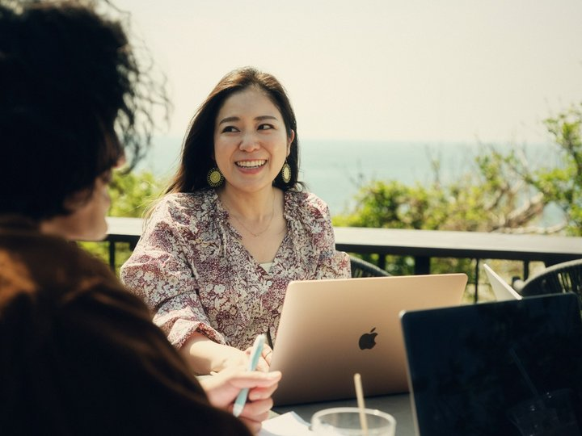
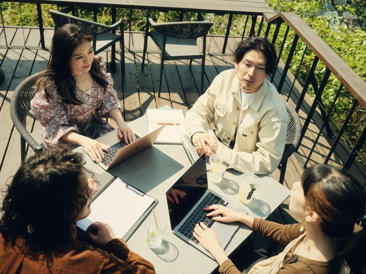
とは、心が動く問いを自分で立て、仲間と分かち合いながら、
自分で決めて動きつづけること。
説明のための人物、Aさんは入社4年目。週末になると「このままでいいのか」と考えて、答えが出ないまま月曜を迎えていた。
POOLOの8ヶ月では、旅、自問、対話、共創を順に経験する。これが1周で、最初の3ヶ月が1周目。一人ひとりの旅には、この順番どおりに進まない続き方もある。同じ場所をもう一度訪ねてから問いが言葉になることも、何週間かたってから初めて人に話すこともある。下の話に出てくる言葉は3つ。
文の終わりの自分ごと化する自分で決める面白がるは、3章の旅的スタンスが出ている場面につけた印。
旅合宿の夜、仲間と話し込んで、気づいたら日付が変わっていた。旅カードには「時間を忘れた」と1行だけ残した。自分ごと化する
自問2週間後に3行ログを読み返すと、印がついていたのは「時間を忘れた」ときのことばかりだった。
対話仲間に問いを話して「あなたなら、どんなときにそう感じる？」と聞くと、「私は、締め切りのない日だけ本音が出る」と返ってきた。面白がる
共創仲間3人で「予定を入れない半日」を企画して試した。撮った写真と感想を3人で分かち合うと、ひとりが「久しぶりに時計を見なかった」と言い、「来月もやろう。次は私が場所を決めたい」と続けた。Aさんは、次の半日の行き先をその仲間に任せた。
この周で自分で決めたこと：どの仲間に問いを話すか。3人で「予定を入れない半日」をやってみること自分で決める
次の旅で確かめたいこと：ひとりで知らない場所にいても、同じことが起きるのか
Aさんが順にしたこの4つを、POOLOでは旅・自問・対話・共創と呼び、4つのステップとして8ヶ月のあいだくり返す。
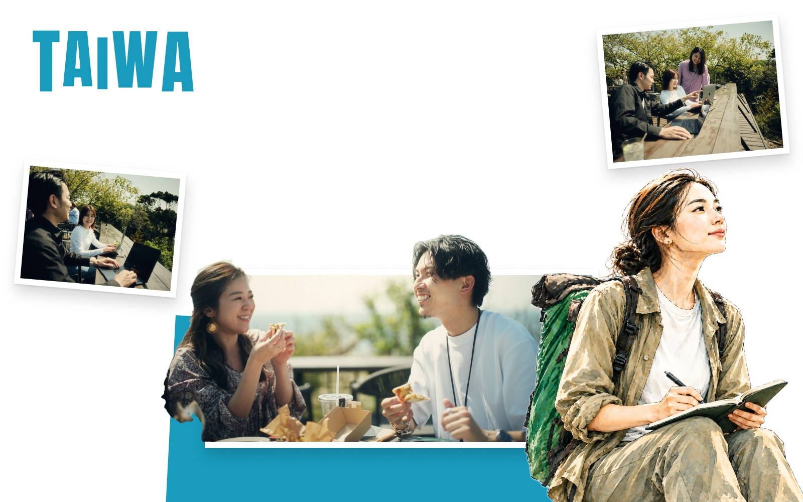
問いの形は、周を重ねると変わる。はじめは「なぜ私は」で始まる、自分がどんなときにどう反応するかを知るための問い。3周目を目安に、大事にしたいと分かったことを、自分の暮らしの中でどうつくるかを決めるための問いに書き換える。
各ステップの型（進め方・道具・ふり返るときの問い・周ごとの深まり）と、周ごとに決めることは、付録Aにまとめた。
4つのステップを、ひとりでするか人とするか、身体を動かすか言葉を使うかで並べると、次の図になる。
POOLOの8ヶ月で経験する順番を描いた図。旅から順に4つのステップを経験するのを1周として、8ヶ月のあいだくり返す。一人ひとりの続き方は、この順番どおりとは限らない。1周するたびに、自分で決めたという実感（納得）と、誰かと分かち合えたという実感（つながり）が育つ。
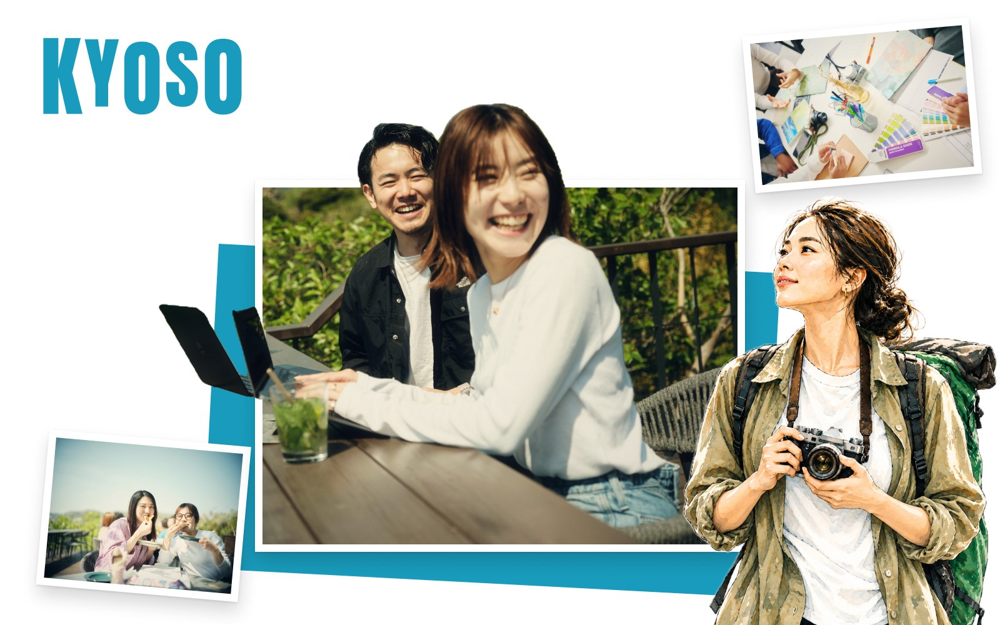
Aさんの合宿の夜は、1行のメモと、2週間後に仲間に話したことで続きが生まれた。すぐに言葉にならなくても、あとで思い出して人に話せば続きは始まる。4つのうちどれかだけを続けていると、次のことが起きやすい。
| 続けていること | 起きやすいこと |
|---|---|
| 旅だけを続ける | 心が動いたことを誰にも話さないままだと、帰ってきた毎日のなかで思い出すきっかけが減っていく |
| 自問だけを続ける | 自分の頭の中で、同じ問いを回しつづける |
| 対話だけを続ける | 話して共感し合うが、行動は変わらない |
| 共創だけを続ける | 動いてはいるが、何を確かめたかったのかが残らず、問いが書き換わらない |
経験学習を研究したコルブの考えをもとに、POOLOで整理したもの。
Aさんは、旅カードに残した「時間を忘れた」という1行を手がかりに問いを立て、3ヶ月のあいだに仲間の一言で書き換えた。POOLOでは、この進み方を「」と呼ぶ。
関心探究型は、今、何に心が動くかを出発点にして、試す、相手の反応を受け取る、また試す、をくり返していく進み方。試すたびに、自分では思いつかなかった経験を人から聞き、それをもとに問いを書き換える。
先にゴールを決めて逆算する進み方（目標逆算型）と比べると、次のようになる。
| 観点 | 目標逆算型 | 関心探究型（POOLO） |
|---|---|---|
| 出発点 | 3年後、どうなりたいか | 今、何に心が動くか |
| 進め方 | ゴールを決めて、逆算して計画を立てる | 試す→相手の反応を受け取る→また試す |
| 答えが見えてくるところ | 自分の中を探して見つける | 自分と相手のあいだで見えてくる |
| 行き着く先 | はじめに思い描いた自分 | 入学時には想像していなかった自分 |
目標逆算型と関心探究型の対比は、安斎勇樹さん（MIMIGURI代表取締役Co-CEO）の考えをもとに、POOLOで整理したもの。
5章で最初の3ヶ月を見たAさんは、そのあと2周して、8ヶ月のあいだに問いをv1.0からv3.1まで書き換えた。図の下に、入学する前のAさんと、いまのAさんを並べた。
1〜3ヶ月目1周目 仲間と回す
なぜ私は、合宿の夜のことだけはっきり覚えているのか
きっかけ：合宿の夜
なぜ私は、締め切りのない夜だと、時間を忘れて人と話せるのか
きっかけ：仲間の一言
4〜6ヶ月目2周目 外にひらく
なぜ私は、次の予定がなくなると、目の前の人との時間に夢中になれるのか
きっかけ：高知の宿のおかみさんの一言
7〜8ヶ月目3周目 手渡す
次の予定を考えない時間を、私は自分の暮らしの中で、人と一緒にどうつくれるのか
きっかけ：1周目の仲間の一言
「予定を入れない夜の会」を企画する
次の人へ手渡す
以前
入社4年目。仕事は回っていて、評価も悪くない。でも週末になると「このままでいいのか」と考えて、答えが出ないまま月曜を迎える。周りに話すと「贅沢な悩みだね」で終わるので、最近は誰にも話していない。
いま
「次の予定を考えない時間を、私は自分の暮らしの中で、人と一緒にどうつくれるのか」という自分の問いを持ち、平日の夜にその時間を自分でつくっている。同じように迷う人と過ごす小さな会も企画した。何を大事に生きるかを、自分の言葉で言える。
1周目（1〜3ヶ月目）は5章に書いた。ここでは、2周目からを追う。文の終わりの印は、5章と同じく旅的スタンスが出ている場面。
旅ひとりで知らない場所にいても同じことが起きるのかを確かめるために、高知へひとりで1泊した。雨で予定が飛んだ日、食堂で漁師と2時間話した。面白がる
自問旅カードを読み返すと、いちばん反応していたのは雨の日の食堂だった。自分ごと化する
対話宿のおかみさんに問いを話すと、「あんた、あの日だけ時計を見なかったね」と言われた。問いの前提が、締め切りから次の予定に変わった。
共創翌朝、問いを持って宿の朝の支度を半日手伝った。手伝いながら気づいたことをおかみさんと話すと、「ここの人は、朝だけは急がんよ」と返ってきた。おかみさんは、東京から来た客が朝の支度を面白がることに驚いていて、帰りぎわに「次は平日においで」と言った。Aさんは、次に確かめる場所を、旅先から自分の平日に移した。
この周で自分で決めたこと：高知へひとりで行く。宿の朝の支度を手伝わせてもらう自分で決める
次の旅で確かめたいこと：旅先でなくても、平日の暮らしの中で同じ時間はつくれるのか
旅平日の夜、1周目の仲間を誘って、近所の行ったことのない銭湯へ行った。スマホを置いて出たら、帰り道で2時間話していた。
自問v2.1と並べて読み返し、旅先の問いを平日の暮らしの問いに書き換えた。問いの形も、「なぜ私は」から「どうつくれるのか」に変わった。自分ごと化する
対話1周目に話した仲間に、もう一度問いを話した。返ってきたのは「私にとっては、子どもが寝たあとの台所がそれ」。旅をしない人の暮らしが、問いに加わった。面白がる
共創卒業制作として「予定を入れない夜の会」を企画した。来た人とその夜の記録を分かち合うと、「次は自分の家でやってみる」と返ってきた。Aさんは翌月、その人の家の会に、手伝う側で行くことにした。
この周で自分で決めたこと：平日の夜に、次の予定を考えない時間をつくる。その時間を人とも過ごす自分で決める
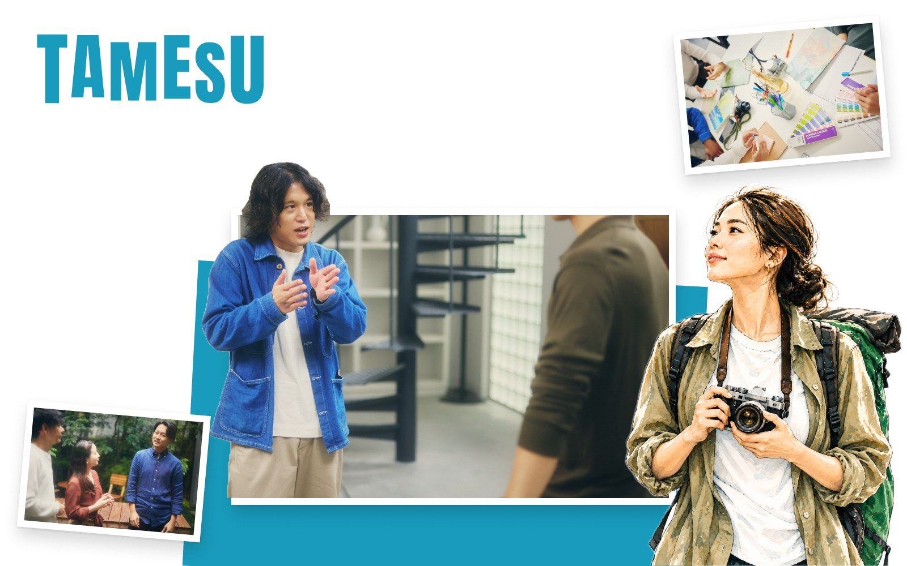
Aさんは説明のための人物。でも、これまでの卒業生には、実際にこんな変化が起きている。移住や独立のような大きな決断は、8ヶ月のあいだに小さく決めることを重ねたあと、卒業してからする人が多い。
POOLO卒業生の実例。
TABIPPO.NETの卒業生取材から6人を選んだ。入学前の迷い、転機になった場面、いまの毎日を、4つのステップと重ねて読める。
POOLO 10期 医師
ずみさん
「自分の心に素直になっていい」
TABIPPO.NETで記事を読むPOOLO 10期 中高一貫校の教員
さらさん
「無理に飾らなくていい。」
TABIPPO.NETで記事を読むPOOLO 10期 採用ブランディングのディレクター
さくぽん
「語り継がれる物語を増やす」
TABIPPO.NETで記事を読むPOOLO 10期 38歳 会社経営
よしよしさん
「下手くそに対話しましょう」（講義で出会った永井玲衣さんの言葉）
TABIPPO.NETで記事を読むPOOLO 10期 元・大手広告代理店（現在はTABIPPO社員）
かなさん
「悩むことも人生」
TABIPPO.NETで記事を読むPOOLO 9期 30歳 フリースクール・通信制高校の先生
ひーちゃん
「自分自身の直感を信じてほしい」
TABIPPO.NETで記事を読むTABIPPO.NETの卒業生取材（2026年公開）を要約したもの。言葉は記事中の本人の発言から1つずつ選んだ（よしよしさんのみ、講義で出会った言葉）。
インタビューで聞くこと
8ヶ月のなかで、参加した人がみんな経験する場面を4つ挙げる。
1ヶ月目
キックオフ画面越しに、初めて仲間と顔を合わせる。50人それぞれが、「このままでいいのか」を抱えて入学している。
2ヶ月目
問いを言葉にする日「わたしは、○○を問います」。自分の問いを、初めて口に出して言葉にする。
4〜6ヶ月目
知らない人に話した日旅先で、知らない人に問いを話してみる。返ってきた一言で、問いの前提が変わることもある。
8ヶ月目
最終発表最初の問いから今の問いまでを並べ、誰のどの一言で問いが変わったかと、8ヶ月のあいだに自分で決めたことを話す。
いま参加している12期でも、入学前の体験会と講義で、旅を入口にした問いかけから心が動き、言葉が変わることが起きている。
12期の体験会のワークシートと、講義後の振り返りシートから集計した数字。人数が少ないので、傾向として読んでほしい。
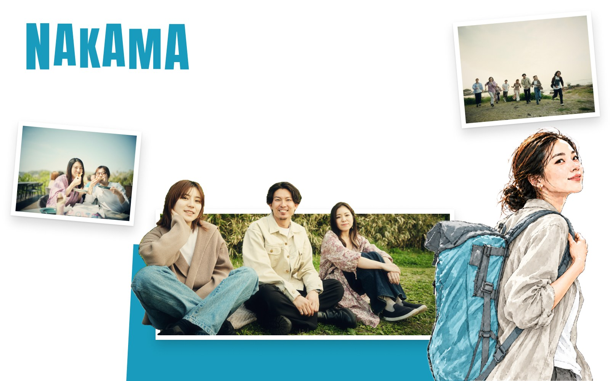
ひとりで考えると、いまの自分の言葉で探せる範囲の中をぐるぐると回る。POOLOで仲間の関心に出会い、その先で知らない人に出会うたびに、問いが書き換わり、遠くへ進んでいく。
Aさんの8ヶ月では、次の3つのひと言で道が曲がった。
Aさんは、POOLOの外で聞いた言葉を持ち帰って、もう一度仲間に話している。
同じ8ヶ月を進む仲間とは、仕事の損得が関係なく、本音で話せる。家でも職場でもない、もうひとつの居場所になる。はじめは仲間に問いを話すところから始まり、回を重ねると、一緒に外へ出ていく。仲間は話を聞いてくれる相手で、自分の地元や仕事場に誘ってくれる相手でもある。誘われて行った先で、また知りたいことが増える。ひとりでは途中でやめてしまうことも、誰かが続けていると続けられる。5章のAさんの問いも、最初は仲間の一言で書き換わった。
8ヶ月のあいだ、コミュニティマネージャー（コミュマネ）と運営チームが伴走する。期のSlackで声をかけたり、講義や合宿を進行したりする。問いを立てて、次の一歩を決めるのは本人。
4章に書いたとおり、習慣は本人だけでは続かず、まわりの人や毎日の流れと一緒に続く。Aさんの8ヶ月でいえば、v1.0からv3.1までの問いの記録、3回くり返した周、問いを話した仲間が、続けるための仕組みにあたる。
「わたしは、○○を問います」と言葉にし、探究ノートに書き換えを残す。次の旅や対話は、前の回の記録から始める。
旅・自問・対話・共創を、8ヶ月のあいだくり返す。回を重ねるごとに、話す相手と試す場所を広げていく。
講義や合宿で顔を合わせ、期のSlackでもつながっている。参加者がひとりだと飛ばしがちな振り返りや試す段階を、一緒に通る相手。
新しい行動が自動的に続くようになるまでの日数は、中央値66日、人によって18〜254日（Lallyほか、2010年、ロンドン大学の研究）。POOLOの8ヶ月は、その幅をほぼ覆う長さ。
考え方を示すための概念図で、測った値ではない。
習慣になるまでに数ヶ月かかる人もいるので、POOLOは8ヶ月をかける。仲間と一緒にくり返すうちに、帰ってきた毎日のなかでも探究が続くようになると考えている。
Aさんは8ヶ月のあいだに、3つのことを自分で決めた。仲間3人で「予定を入れない半日」をやってみること。高知へひとりで行き、宿の朝の支度を手伝わせてもらうこと。平日の夜に、次の予定を考えない時間をつくり、その時間を人とも過ごすこと。
3つとも、誰かと一緒にやっていて、相手から反応が返ってきた。仲間は「来月もやろう」と言い、おかみさんは「次は平日においで」と言い、夜の会に来た人は「次は自分の家でやってみる」と言った。
自分で決めたという実感を、POOLOでは納得と呼ぶ。誰かと分かち合えたという実感を、つながりと呼ぶ。Aさんの3つの選択には、どれにも両方が入っている。自分で決めたことを、誰かと分かち合えたという実感を、POOLOでは豊かさと呼んでいる。納得とつながりが両方育ったときにいちばん大きくなるので、掛け算で考えている。
横を納得、縦をつながりにして、面の広さを豊かさとして描いた概念図。測った値ではない。
「このままでいいのか」と葛藤し、立ち止まっている人が、自分で決めて、して前向きに進めるようになる。
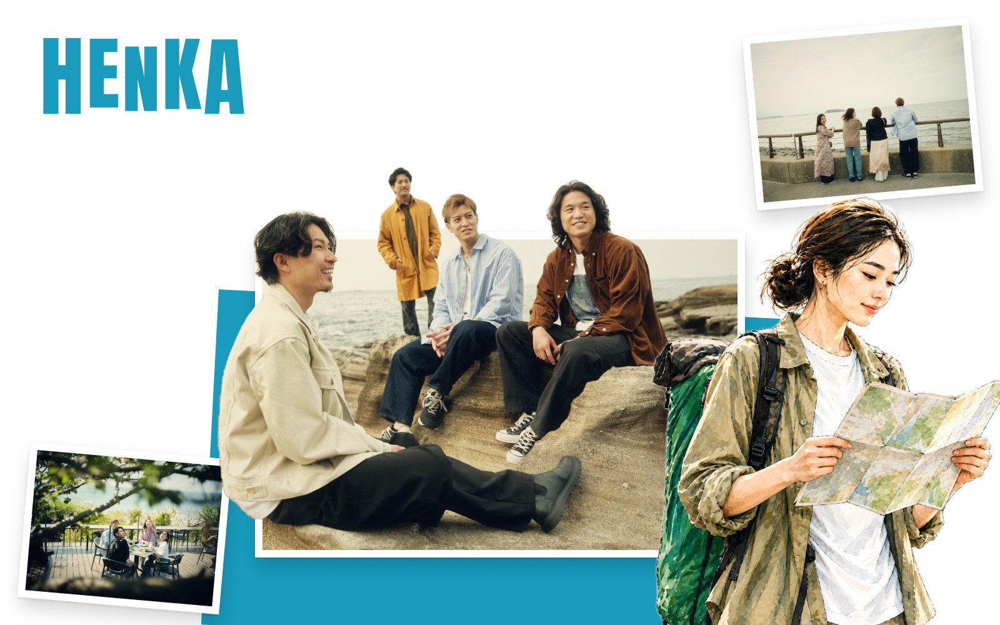
POOLOが目指すのは、「な世の中」。一人ひとりが自分の好きや夢中から動き、何を良いとするかを自分の感覚で選んで表現し、それを持ち寄って与え合う。正解はないので、基準はみんなでつくり直しながら前に進んでいく。旅する人も、その土地で暮らす人も、混ざり合って関わり合っている。そんな世の中。
ここでいう「ご機嫌」は、いつも楽しいことではない。怖さや衝突も含めて、心が動いている毎日のこと。そういう人が少しずつ増えていくことを、目指している。
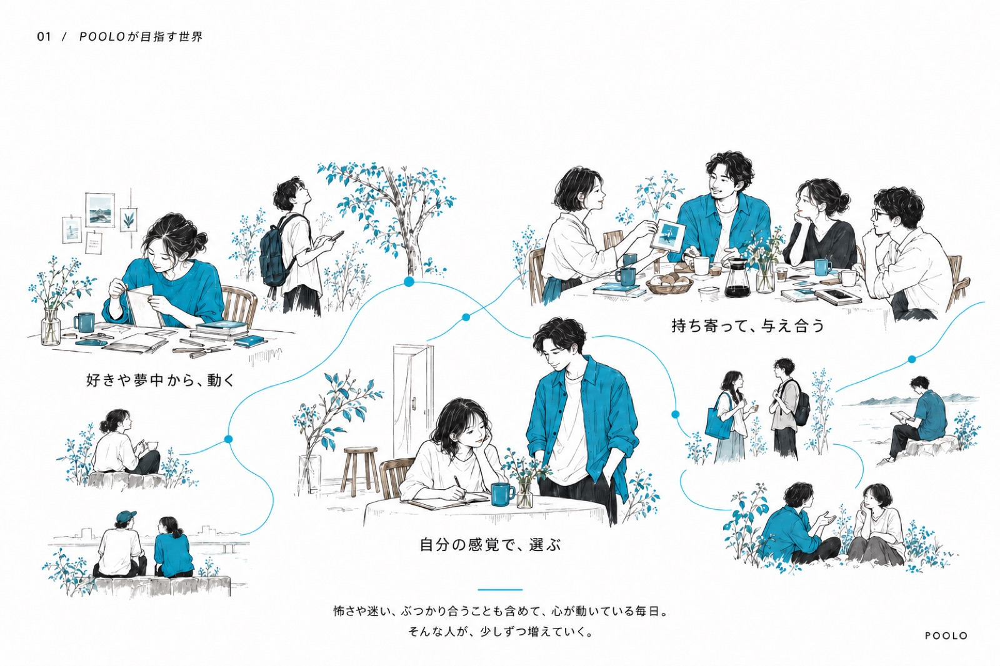
最後に、問いを持ちつづけることについて書いておきたい。選べることが増え、AIに聞けば答えっぽいものがすぐ返ってくる今、何を大事に選び、誰と分かち合いたいのかは、自分で問いつづけるしかない。
巡礼路で、日記は1万字を超えた。それだけ書いても、歩く理由は分からないままだった。それでも次の日も歩いた。
POOLOの8ヶ月で、問いは仲間とのあいだで何度も書き換わる。最初の問いに、卒業までに答えが出るとは限らない。それでも、心が動いた経験から問いを立て、人に話し、一緒に試すことを続けていれば、そのたびに自分で決めて進んでいける。卒業後も問いは続く。
冒頭の3つの問いを、もう一度置いておく。
最後に、時間を忘れて誰かと話したのはいつですか？
社会人になって、本気で語り合える仲間はいますか？
最後に「これは自分で決めた」と胸を張れる決断をしたのはいつですか？
POOLOは、正解のない時代に、自分の問いを持ちつづけ、仲間と一緒に豊かさを育てていく場所。
体験会や個別相談会で、よく聞かれることに答えます。
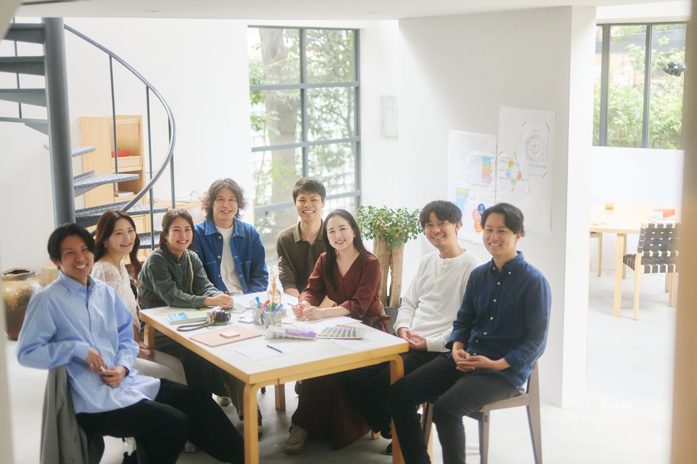
忙しくて、旅に行く時間がありません
遠くへ行かなくて大丈夫です。行ったことのない場所に半日出かけるところから始められます。
友人に誘われた旅でもいいですか
大丈夫です。途中で「この人の話をもう少し聞きたい」と足を止めた場面があれば、そこから始められます。
人に話すのが苦手です
話す相手は、仲間から少しずつ広げていきます。問いは仮のままでいいので、うまく話せなくても大丈夫です。
やりたいことが、まったく分かりません
だからこそ来てほしいと思っています。POOLOでは、今、何に心が動くかから始めるので、最初の問いは「なぜか覚えていること」から立てれば大丈夫です。その問いを人に話したり試したりしながら、やりたいことを少しずつ言葉にしていきます。大学生のころの僕も、自分の感想や感情を見失ったところから始まりました。
8ヶ月も続けられるか不安です
8ヶ月のあいだ、毎週何かをし続ける必要はありません。旅から何週間かたって、初めて仲間に話す人もいます。同じ8ヶ月を進む仲間と、伴走する運営チームがいるので、間があいても続きから始められます。
旅慣れていなくても大丈夫ですか
旅の上手さは関係ありません。大事なのは、いつもの外に出て、誰かの暮らしに触れ、心が動いたことを覚えておくこと。旅慣れていない人ほど、心が動く場面に出会いやすいと思っています。
キャリアコーチングとは何が違いますか
コーチングは、答えに向かって一緒に整理する場です。POOLOは、自分の問いを持ち、仲間とのあいだで書き換えていく場。納得だけでなく、つながりも同時に育ちます。
旅・・・の4つのステップを順に進めるのを1周として、8ヶ月のあいだくり返す
行ったことのない場所に出かけ、合宿では仲間と夜まで本音で話す機会
約2週間に1回。旅の経験が豊富な約20名の講師陣
同じ8ヶ月を一緒に進む、仕事の損得が関係ない人たち
チームで企画を立てて、期限までに人に届ける
問いがどう書き換わったかを、最初から順に書き残す
期を超えて続く通年コミュニティ（約70名）
1〜3ヶ月目1周目 仲間と回す
4〜6ヶ月目2周目 外にひらく
7〜8ヶ月目3周目 手渡す
講義は約2週間に1回。8ヶ月を通して、運営チームが伴走する。
POOLOの講義には、旅の経験が豊富で、各分野の第一線にいる講師が立つ。4つのステップと豊かさのテーマに沿って、講師を並べた。
髙井典子神奈川大学国際日本学部教授／観光研究
新井邦弘地球の歩き方代表取締役社長
東出昌大俳優
八木仁平自己理解メソッド開発者
三宅香帆文芸評論家
最所あさみ文化編集者
永井玲衣作家／哲学対話
安斎勇樹MIMIGURI代表取締役Co-CEO
千葉佳織カエカ代表
徳谷柿次郎Huuuu代表
遠山正道スマイルズ代表
前野隆司武蔵野大学ウェルビーイング学部長
山口周独立研究者
四角大輔作家
12期の講師と、これまでの登壇ゲストを、テーマの近さで並べた。TABIPPO代表の清水直哉さんも、11期・12期に登壇している。
ここから先は資料編。言葉の定義、理論、型をくわしく知りたいときに読んでほしい。
ここでは、旅・自問・対話・共創という4つの言葉を定義する。定義には、全体図の2つの軸と、それぞれのステップで書き残すものを使う。
旅と共創は、出かける、一緒にやってみる、といった身体を動かすこと。自問と対話は、ノートに書く、人に話す、といった言葉を使うこと。
旅と自問は、自分の心がどう動いたかを自分で確かめる、ひとりですること。対話と共創は、相手の反応を受け取って問いを書き換える、人とすること。
旅をひとりですることに入れているのは、どこで足を止めるかを決めるのも、心が動いたと気づくのも本人だから。旅先で触れるのは誰かの暮らしで、相手について初めて知ることと、自分について初めて知ることが同じ場面で起きる。
| ステップ | ひとことで | 具体的には | 書き残すもの |
|---|---|---|---|
| 1 旅身体×ひとり | いつもの暮らしの外に出かけ、いつもの当たり前が通じない場所で、誰かの暮らしに触れて心が動く経験をすること。 | 出かけた先で足を止める場面を自分で決め、心が動いたことを書き残す。書くのは帰ってからでもいい。 | 心が動いたことのメモ（旅カード） |
| 2 自問言葉×ひとり | 心が動いた経験を自分に問いかけ、答えを出さないまま、仮の問いとして言葉にすること。 | 残したメモを1〜2週間おいて読み返し、何度も戻ってくることを「なぜ私は、［いつ・どこで・誰といたとき］に、［どう反応する］のか」の形に書く。3周目を目安に、「どうつくれるのか」の形に書き換える。 | 仮の問い（最初の問いをv1.0として、書き換えるたびに数字を上げ、日付をつけて残す） |
| 3 対話言葉×他者 | 仮の問いを人に話し、相手ならどんなときにそう感じるかを聞いて、問いを書き換えること。 | 考えの違う人に、問いとそう思ったきっかけを話し、「あなたなら、どんなときにそう感じる？」と聞いて、返ってきた一言で問いを書き換える。 | 書き換えた問いと、誰のどの一言で変わったかの記録 |
| 4 共創身体×他者 | 問いを持って人と一緒にやってみて、分かったことをその人と分かち合うこと。 | 誰かと一緒に小さく試し、分かったことをその人と分かち合って、返ってきた一言で問いを書き換える。 | 分かち合ったこと、返ってきた一言、次の旅で確かめたい問い |
解釈が分かれやすいところを、具体例で分けた。迷ったときは、上の定義に当てはまるかと、書き残すものがあるかで判断する。
| ステップ | 入るもの | 入らないもの |
|---|---|---|
| 旅 | 近所の行ったことのない店に入る／誰かの仕事を半日手伝う／ひとりで1泊する | 決められた予定をこなすだけの旅行 |
| 自問 | 1行だけのメモ／うまく言えないまま残した言葉／仮のままの問い | 強みや目標を整理して書く自己分析／人に見せるために文章を整えること |
| 対話 | 仲間に問いを話し、相手ならどんなときにそう感じるかを聞く／旅先で知らない人に問いを話す | 正解やアドバイスをもらう相談／共感し合って終わる会話／AIと話して終えること |
| 共創 | 気になる人に30分話を聞きに行く／誰かの暮らしや仕事を手伝う／チームで小さな企画をやる | 人のいない場でひとりで試すこと（旅か自問に入る）／完成させることだけが目的の大きな企画 |
3章と4章で見たように、旅をすると4つのことが一度に起きるが、その続きは途切れやすい。4つのステップは、旅を入口にして、自問・対話・共創を8ヶ月のなかで経験していく順番。この並べ方でよいと考えている理由を、学びの研究から3つ挙げる。そのあとに現場で見てきたことを書いておく。
経験学習のサイクルを整理したコルブは、経験する、振り返る、考えをつくる、試す、の4つの段階をすべて通ったときに学びが深まると考えた（1984年）。POOLOでも、4つを全部経験すると、次の旅に持っていくものが増える。
哲学者のポランニーは、人は言葉にできるより多くのことを知っていると書いた（1966年）。野中郁次郎さんと竹内弘高さんのSECIモデル（1995年）は、身体で知っていることと言葉にしたことを行き来するなかで、新しい知識が生まれると整理している。POOLOでは、旅で身体に入ったものを自問で言葉にし、共創でもう一度身体で試す。
デューイは、経験を人に伝えると、伝える側の経験も変わると書いた（1916年）。コルブのサイクルはひとりでも回せる形だが、POOLOは4つのうち対話と共創の2つを、必ず他者と一緒にやるステップにしている。ひとりですることと人とすることを1周のなかで両方通ると、納得とつながりが育ち、その2つがになる。
経験からの学び方は、デイヴィッド・コルブが、デューイやレヴィン、ピアジェの考えをもとに、経験学習のサイクルとして整理している（『Experiential Learning』1984年）。経験する、振り返る、考えをつくる、試す、の4つの段階を順に通り、試したことが次の経験になる流れ。コルブは、4つの段階をすべて通ったときに学びが深まると考えた。
コルブは、人によって得意な段階と苦手な段階があるとも述べた。POOLOでは、ひとりで取り組むと苦手な段階を飛ばしやすく、サイクルが途中で止まってしまうと見ている。仲間は、本人が飛ばしがちな段階を一緒に通る相手で、振り返りを聞いて問いを返したり、試したかを一緒に確かめたりする。次の一歩を決めるのは本人。
コルブ（1984年）の4段階との対応は、POOLOによる整理。対話はコルブのサイクルにはない段階なので、図では学び手が考えをまとめる段階（抽象的概念化）の位置に置いた。
対話は、コルブのサイクルにはない段階。POOLOが自問のあとに対話を置き、対話と共創で必ず他者を通すことは、デューイの考えで説明できる。デューイは『Democracy and Education（民主主義と教育）』（1916年）の第1章で、経験を人に伝えると、受け取る側だけでなく伝える側の経験も変わると書いた。経験を伝えるには、まずそれを相手に分かる形にしなければならない。そのためにはいったん自分の経験の外に出て、相手から見たらどう見えるか、相手の暮らしとどこが重なるかを考えることになる、という指摘。自問でつくった問いも、人に話そうとした時点で書き換えが始まる。
デューイは『Experience and Education（経験と教育）』（1938年）の第3章で、前の経験がその人を変え、次の経験の質も変えるという、経験の連続性について書いた。『Democracy and Education』の第7章では、関心を分かち合う人の範囲が広がり、違う集団どうしが行き来するほど、受け取るものが多様になり、考えるきっかけが増えると書いている。POOLOが回を重ねるごとに、問いをPOOLOの外の人へも話し、最後には次の人へ手渡すのは、関心を分かち合う人の範囲を広げるため。最後の回には、最初の問いと書き換えの記録を並べて読み、問いがどう変わったかと、自分で決めたことを確かめる。
観光社会学者のエリック・コーエンは、人が旅に求めるものを5つのモードに分けた（1979年）。POOLOでは、旅から帰ったら「今回はどのモードだったか」を選ぶ。問いが書き換わる旅は、体験モードや実存モードに近づく。
| モード | どんな旅か |
|---|---|
| 娯楽モード | 楽しんで元気になり、いつもの毎日に戻る旅 |
| 気晴らしモード | いつもの毎日の退屈から、いっとき離れる旅 |
| 体験モード | 旅先の人の暮らしにふれて、その本物らしさを味わう旅 |
| 実験モード | いろいろな暮らし方を試して、自分に合うものを探す旅 |
| 実存モード | 旅先に、自分が大事にしたいことの中心を見つける旅 |
同じ行き先でも、旅先の人や場所とどう関わったかで、モードは変わる。
2章の4つの理由にかかわる、そのほかのデータ。「理由3」「理由4」は、2章の番号を指す。
理由3 答えは、1年で3倍の人に届くようになった
総務省「情報通信白書」令和7年版
理由4 海外に行く人は、20年前より少ない
外務省「旅券統計」をもとにした日本旅行業協会の集計
理由4 どちらも、世界の平均を大きく下回る
Gallup「State of the Global Workplace」2026年版／パーソル総合研究所「グローバル就業実態・成長意識調査」2022年
理由4 およそ4割
総務省統計局「令和2年国勢調査」
この本でモデルと呼んでいるのは、POOLOの考え方を図や型の形にしたもの。
| モデル | 一言でいうと | 定義 | そう考える理由 | 使い方 |
|---|---|---|---|---|
| 探究 | 心が動く問いを自分で立て、仲間と分かち合いながら、自分で決めて動きつづけること | 5章 | 資料編 | 付録A |
| 関心探究型 | 今、何に心が動くかを出発点にして、試しながら問いを書き換える進み方 | 5章 | 5章安斎勇樹さんの考え | 5章のAさん |
| 4つのステップ旅・自問・対話・共創 | 身体と言葉、ひとりと他者でできた4つのマスを、旅から順に進む | 資料編 | 資料編コルブ、ポランニー、SECIモデル、デューイ | 付録A |
| 豊かさ＝納得×つながり | 自分で決めたという実感と、誰かと分かち合えたという実感の掛け算 | 8章 | 資料編 | — |
| 習慣を続ける3つの仕組み | 問いを言葉にして記録、8ヶ月くり返す、仲間と運営チーム | 7章 | 4章デューイ、コルブ | 8ヶ月のロードマップ |
| 旅的スタンス3つのスタンス | 自分ごと化する、自分で決める、面白がる | 付録A | — | 付録A |
ほかのメソッドとの違いは付録Bにある。
この本で決まった意味で使っている言葉の一覧。
| 言葉 | 定義 | くわしく |
|---|---|---|
| ご機嫌 | 怖さや衝突も含めて、心が動いている毎日のこと | 8章 |
| 探究 | 心が動く問いを自分で立て、仲間と分かち合いながら、自分で決めて動きつづけること | 5章 |
| 関心探究型 | 今、何に心が動くかを出発点にして、試す、相手の反応を受け取る、また試す、をくり返していく進み方 | 5章 |
| 旅 | いつもの暮らしの外に出かけ、いつもの当たり前が通じない場所で、誰かの暮らしに触れて心が動く経験をすること | 3章、資料編 |
| 自問 | 心が動いた経験を自分に問いかけ、答えを出さないまま、仮の問いとして言葉にすること | 資料編 |
| 対話 | 仮の問いを人に話し、相手ならどんなときにそう感じるかを聞いて、問いを書き換えること | 資料編 |
| 共創 | 問いを持って人と一緒にやってみて、分かったことをその人と分かち合うこと | 資料編 |
| 心が動く | うれしかった、引っかかった、なぜか覚えている、のどれかが起きること | 資料編 |
| 場面 | いつ・どこで・誰といたときか | 資料編 |
| 問い | 「なぜ私は、［いつ・どこで・誰といたとき］に、［どう反応する］のか」か、「［大事にしたいこと］を、私は［どこで・誰と］どうつくれるのか」の形をした、一言では答えが出ない文 | 資料編 |
| 書き換える | 問いの言葉が変わること（1語のこともあれば、前提ごと変わることもある） | 資料編 |
| 納得 | 自分で決めたという実感 | 8章 |
| つながり | 誰かと分かち合えたという実感 | 8章 |
| 豊かさ | 自分で決めたことを、誰かと分かち合えたという実感 | 8章 |
| 旅的スタンス | 自分ごと化する、自分で決める、面白がる、の3つのスタンス。旅でいちばん身につき、どのステップでも大事にする | 3章、付録A |
| 探究ノート | 問いがどう書き換わったかを、最初から順に書き残すノート | 参加を考えている人へ、付録A |
4つのステップと8ヶ月の進め方は、主に3つの理論をもとにしている。くわしくはなぜこの4つのステップなのかに書いているので、ここでは先に、それぞれの理論がどんなものかだけ紹介する。
理論1
理論2
理論3
4つのステップを、コルブの経験学習サイクルとSECIモデルの段階に重ねると、次のようになる。ステップの中で参考にしている考えも並べた。
| ステップ | 経験学習サイクル（コルブ） | SECIモデル（野中・竹内） | ステップの中で参考にしている考え |
|---|---|---|---|
| 旅 | 具体的経験 | 共同化体験を通して、身体で知る | 旅の5つのモード（コーエン）、越境学習（石山恒貴） |
| 自問 | 内省的観察 | 表出化身体で知っていることを言葉にする | フォーカシング（ジェンドリン）、暗黙知（ポランニー） |
| 対話 | 抽象的概念化の位置に置く | 連結化人の言葉と合わせて組み直す | ダイアローグ（ボーム）、伝えると伝える側も変わる（デューイ） |
| 共創 | 能動的実験 | 内面化試して、もう一度身体で知る | エフェクチュエーション（サラスバシー）、実践共同体（ウェンガー） |
対応はPOOLOによる整理。SECIモデルは組織の知識について書かれたもので、POOLOはそれを一人ひとりの人生の問いに置き換えている。SECIの共同化は人と体験をともにすることを指し、POOLOはそこに、知らない人や場所に触れる旅を置いた。対話をコルブの抽象的概念化の位置に置く理由は、付録Bに書いた。
ステップごとに「型・道具・ふり返るときの問い・周ごとの深まり」をそろえた。この型どおりにくり返せば、スタート地点が人によって違っても、4つの力がある程度のところまで育つ。道具は1冊の「探究ノート」にまとめる。
型：旅の3つの決めごと
ふり返るときの問い
道具
旅カード（行き先／足を止めた場面／出会った人の暮らしについて初めて知ったこと／そのとき自分について初めて知ったこと／あとから書き足したこと）
旅の5つのモード（エリック・コーエン）
帰ったら「今回はどのモードだったか」を選ぶ。問いが書き換わる旅は、体験モードや実存モードに近づく。
型：残す・読み返す・選ぶ・問う
できたと言える目安：よい問いの3つの条件
道具
3行ログ、問いカード、人生の領域の表（ホイール・オブ・ライフ）
フォーカシング（ユージン・ジェンドリン）
ログは身体の反応から書く。うまく言えないものは、うまく言えないまま残す。
型：相手の経験を聞く対話
ふり返るときの問い
止まりやすいとき
ダイアローグ（デヴィッド・ボーム）
聞き手は、答えの代わりに、問いと「自分ならどんなときにそう感じるか」を返す。
型：試して、分かち合う
ふり返るときの問い
道具
試すカード（確かめたいこと／やったこと／分かち合ったこと／返ってきた一言／書き換えた問い）
エフェクチュエーション（サラス・サラスバシー）
手持ちのもので、失ってもいい範囲から小さく始める。
1周は、問いを書き換えて終わる。その途中に、自分で決めることが毎回入っている。はじめは行き先や話す相手、3周目には自分の暮らしのことを決める。
| 時期 | 問いの形 | 自分で決めること | Aさんの場合 |
|---|---|---|---|
| 1周目 | なぜ私は | 行き先、何を問うか、誰に話すか | どの仲間に問いを話すか。3人で「予定を入れない半日」をやってみること |
| 2周目 | なぜ私は（前提を問う） | ひとりで確かめに行く先と、話しかける相手 | 高知へひとりで行く。宿の朝の支度を手伝わせてもらう |
| 3周目 | どうつくれるのか | 自分の暮らしの中で、時間をどう使い、誰と過ごすか | 平日の夜に、次の予定を考えない時間をつくる |
最終発表では、最初の問いから今の問いまでを並べ、8ヶ月のあいだに自分で決めたことを話す。
| スタンス | 旅 | 自問 | 対話 | 共創 |
|---|---|---|---|---|
| 自分ごと化する | 心が動いたことを、自分のこととして残す | 自分の言葉で問いにする | 相手の経験を聞いて、自分ならどうかを考える | 自分の問いを持って、試しにいく |
| 自分で決める | 行き先や、どこで足を止めるかを、自分で決める | 「わたしは、○○を問います」と言葉にする | 誰に話すかを、自分で決める | 完成を待たずに、出すかを自分で決める |
| 面白がる | 予定外の出来事を歓迎する | うまく言えないものを、うまく言えないまま残す | 考えの違う人の話を、書き換えのきっかけにする | 予想と違う返事ほど、問いの書き換えに使う |
型もスタンスも、「そのままの自分でいていい」と思える仲間との関係があることを前提に使う。入学時に4つのステップのどこが得意かを見て、時間をかけるステップを人によって変える（入学時アンケートや、POOLO LIFE INDEXのような診断）。
ほかのメソッドを、4つのステップのどこを中心に組み込んでいるかで並べた。
各メソッドの一般的な形をもとに、POOLOで整理したもの。
| メソッド | 扱うもの | 進め方と道具 | POOLOとの違い |
|---|---|---|---|
| Designing Your Lifeスタンフォード大学 d.school | 人生とキャリアの設計 | グッドタイム・ジャーナル、オデッセイプラン、プロトタイプ会話 | POOLOは、旅に出て心が動いた経験から問いを立てる。Designing Your Lifeは計画と試作が中心 |
| 問いのデザイン安斎勇樹・塩瀬隆之（2020年） | 組織やチームの課題と、対話の場 | 課題のデザインとプロセスのデザイン | POOLOでは、自分の人生の問いを持つ本人が書き換える。問いのデザインは、問いをつくる側の技法 |
| アウトワード・バウンドウォルシュ、ゴリンズ（1976年） | 冒険教育 | なじみのない環境で小さな集団が課題に取り組み、経験の意味を組み直す | POOLOは経験を日常に持ち帰り、8ヶ月くり返す。アウトワード・バウンドは非日常の中で完結しやすい |
| 経験学習モデルコルブ／松尾睦 | 仕事の経験から学ぶ | 経験→振り返り→概念化→試す | POOLOは対話と共創で、必ず他者とのあいだを通す。経験学習モデルは、ひとりで進める循環 |
| キャリアコーチング一般的な型 | キャリアの意思決定 | 自己理解→ビジョン→行動計画。コーチと1対1 | POOLOは納得とつながりを一緒に育てる。キャリアコーチングでは、納得は育つが、つながりは育ちにくい |
経験学習モデルとの対応：POOLOの旅・自問・共創は、それぞれコルブの具体的経験・内省的観察・能動的実験にあたる。コルブの図で学び手が考えをまとめる段階（抽象的概念化）の位置に、POOLOは対話を置き、他者とのあいだで問いを書き換える。そのため、POOLOの自問は内省的観察まで。対話をこの位置に置く考え方は、人に伝えようとすると伝える側の経験も変わる、というデューイ（1916年）の考えと重なる。